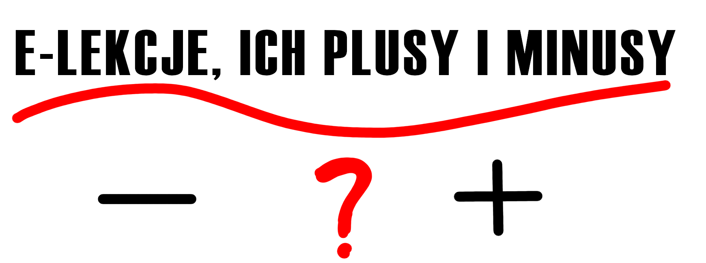
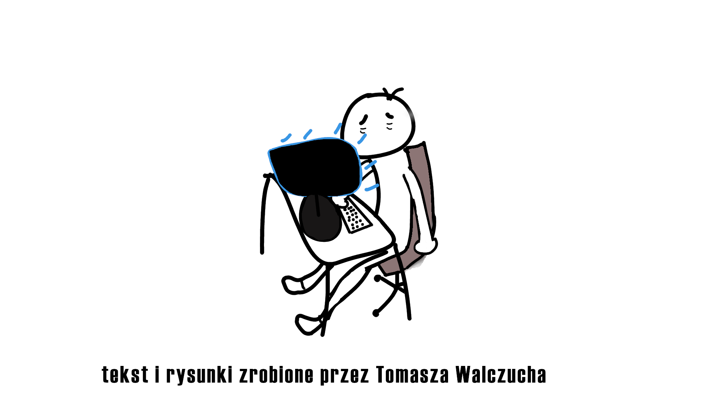

W dzisiejszych czasach wszyscy przeżywamy tą sytuacje - pandemię.
Dzisiaj opiszę sytuację uczniów, czyli naukę zdalną.
Tak, więc zacznijmy od jednej z najważniejszych rzeczy czyli sprawdzianów oraz kartkówek,
one ucierpiały najbradziej. Teraz nic nie przeszkodzi uczniowi żeby "ściągał"
podczas pisania, może otworzyć książkę i przepisać poprawne odpowiedźi.
Tyczy się to również pytań, gdyż podczas odpowiedzi uczeń może spoglądać
na książkę, aby przypomnieć sobie wiadomośći.
Z tego co narazie powiedziałem, to wychodzi na to że dla uczniowiów jest o wiele lepiej
niż jak byli w szkole. W sumie to racja, lecz są i też minusy tej sytuacjii.
Zazwyczaj nie wynoszą z lekcji wszystkiego co nauczyciel powiedział, z wielu powodów, np.:
coś ich cały czas rozprasza - ktoś pisze coś w komunikatorze, rodzic wchodzi mu do pokoju, itd.
Lecz oprócz skupienia na lekcji jest drugi problem czyli po prostu bardzo długie siedzenie przed komputerem.
Może to wywołać duże szkody ponieważ - uczeń cały czas siedzi krzywo, jest zgarbiony,
lub psuje sobie wzrok przez codzienne długie siedzenie przed monitorem.
Ja, jako uczeń stwierdzam że raczej wolałbym wrócić do szkoły,
niż siedzieć przed komputerem cały dzień.
Znalazłeś sekret!
